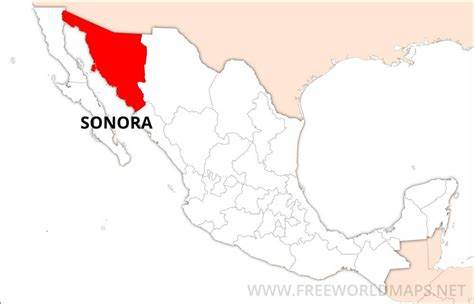

Introducción
Sonora es un estado del noroeste de México, colinda con Estados Unidos, Chihuahua, Sinaloa y el Mar de Cortés. Tiene una superficie de 179,355 km² y su capital es Hermosillo. Fue fundado en 1831 y ha tenido un papel importante en la historia de México, especialmente durante la Revolución. Entre sus principales ciudades están Hermosillo, Guaymas, San Carlos y Álamos. Su geografía combina desierto, sierra y litoral, con una gran diversidad de flora y fauna, incluyendo especies como el jaguar. Sonora tiene una rica cultura con festivales como el del Pitic y el FAOT, además de una fuerte presencia indígena de pueblos como los yaquis, seris y mayos. Su gastronomía destaca por la carne asada, coyotas y el bacanora. La economía es diversa: agricultura, ganadería, industria automotriz y turismo son pilares clave. Tiene cerca de 3 millones de habitantes, clima mayormente árido y dos Pueblos Mágicos: Álamos y Magdalena.